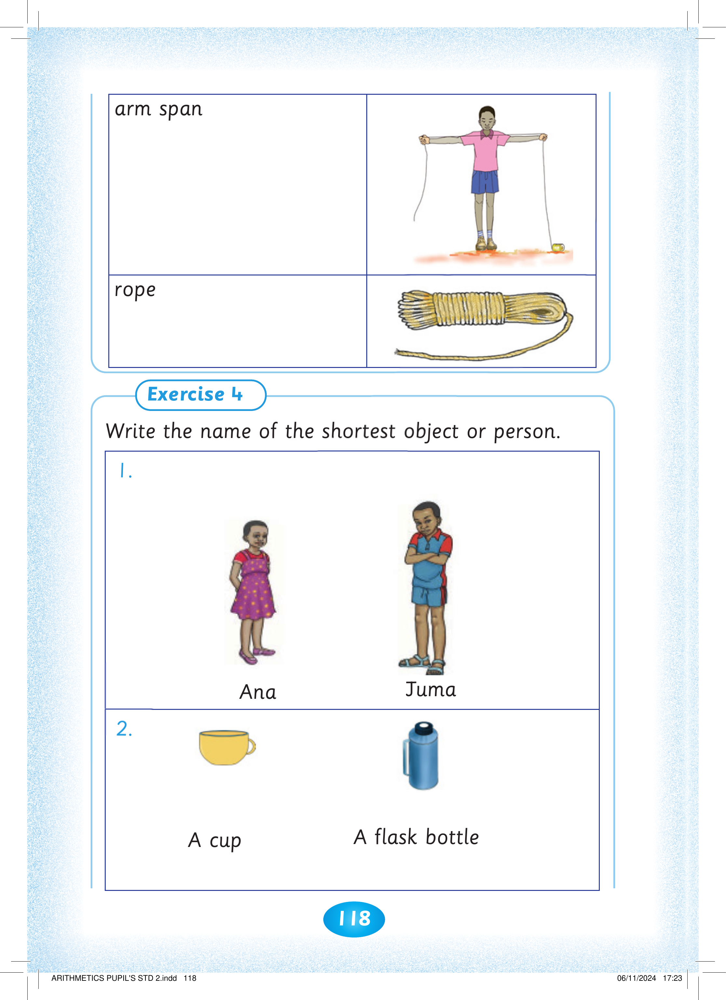
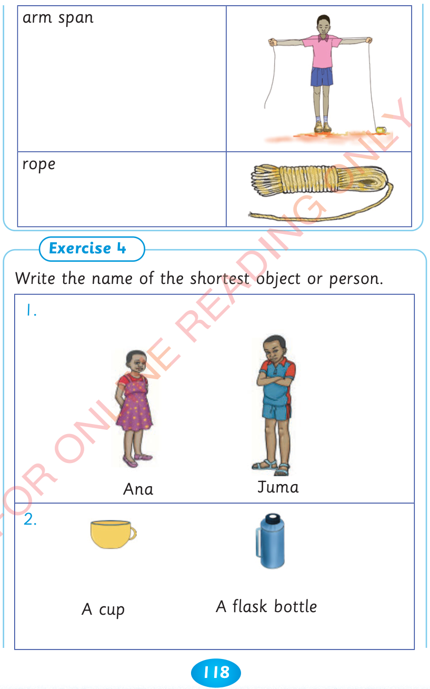

118



Arm span. The picture shows a child standing with both arms stretched out, holding a rope from one hand to the other. Rope. The picture shows a coiled rope with one loose end stretched out. Exercise 4. Write the name of the shortest object or person. 1. Ana. Juma. Ana and Juma stand upright on the same ground line. The top of Ana's head is lower than the top of Juma's head. 2. A cup. A flask bottle. The cup and flask bottle rest on the same level. The top of the cup is lower than the top of the flask bottle.
rope
Exercise 4
Write the name of the shortest object or person.
1.
Ana
Juma
2.
A cup
A flask bottle


ARITHMETICS PUPIL'S STD 2.indd 118
06/11/2024 17:23